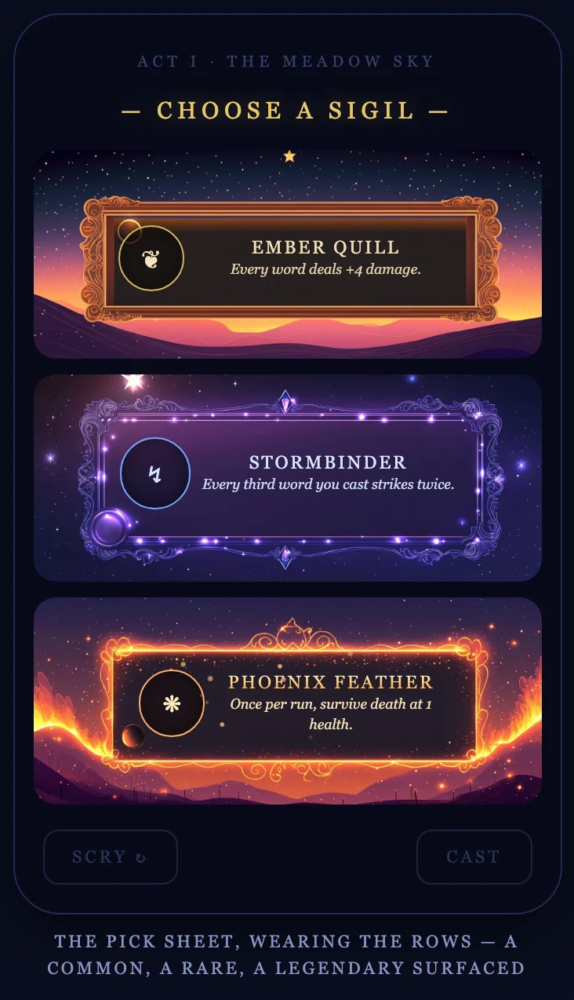
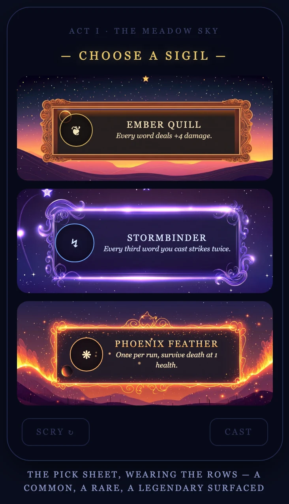
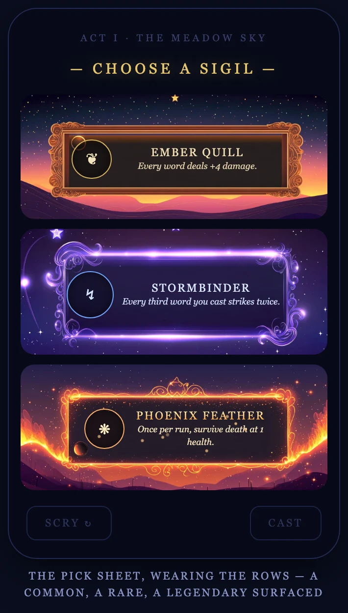
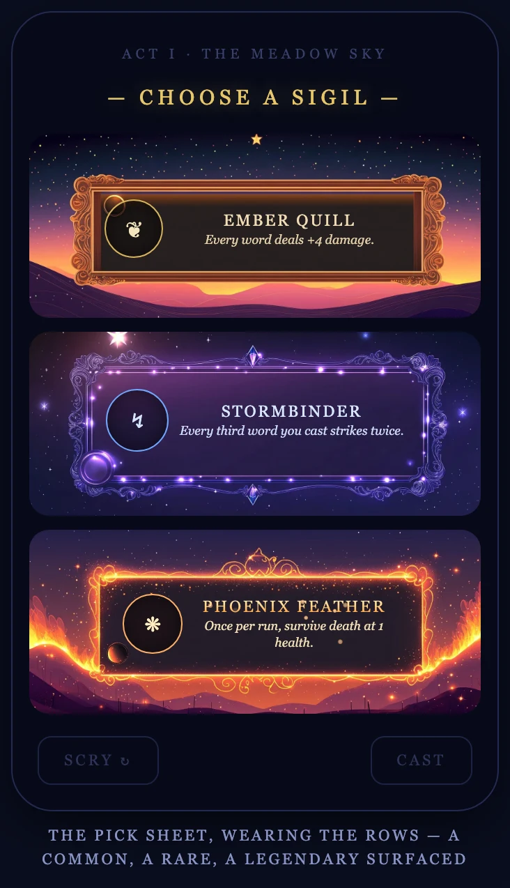
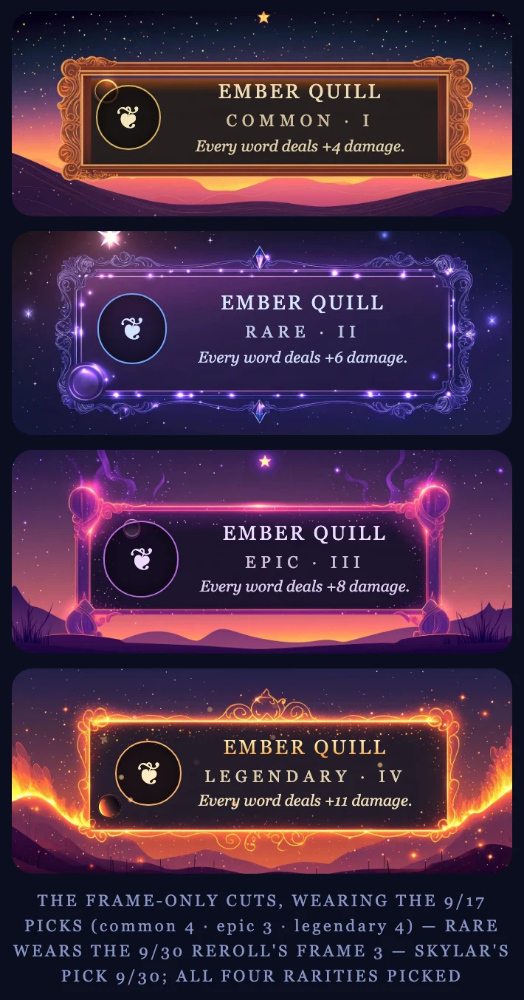
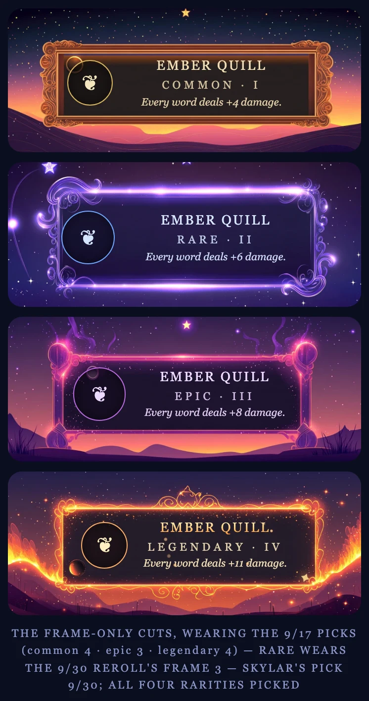
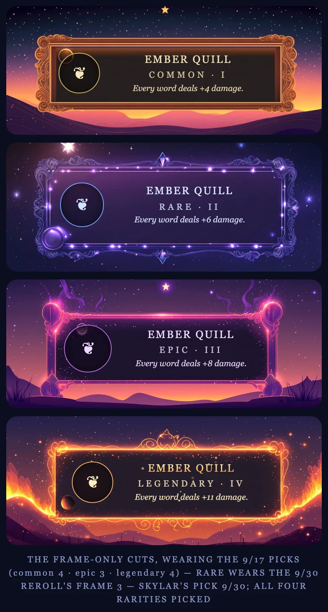
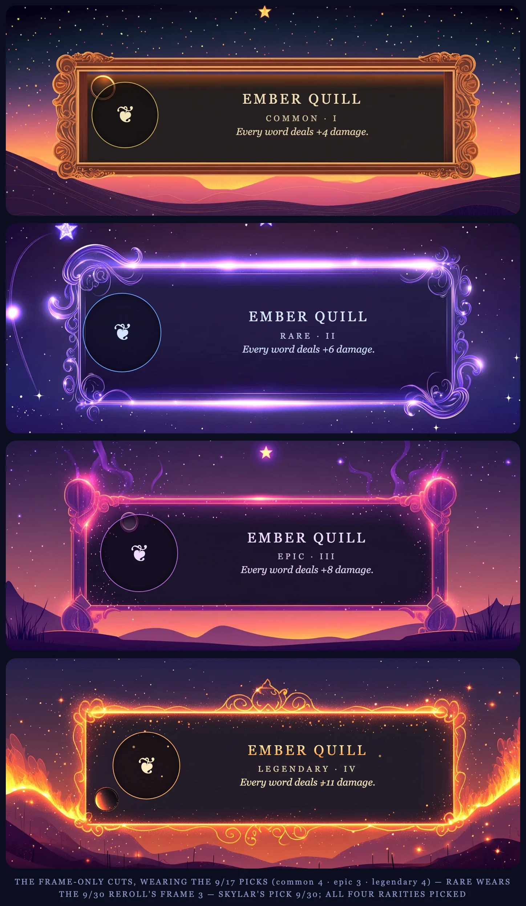
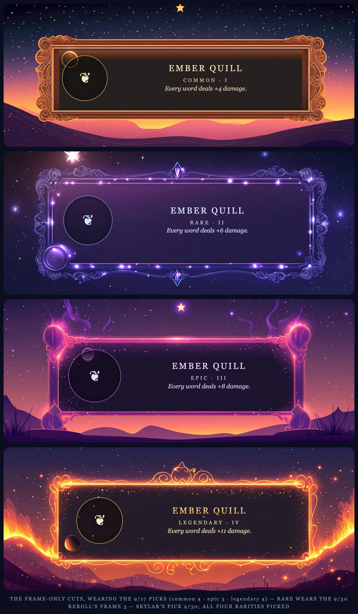
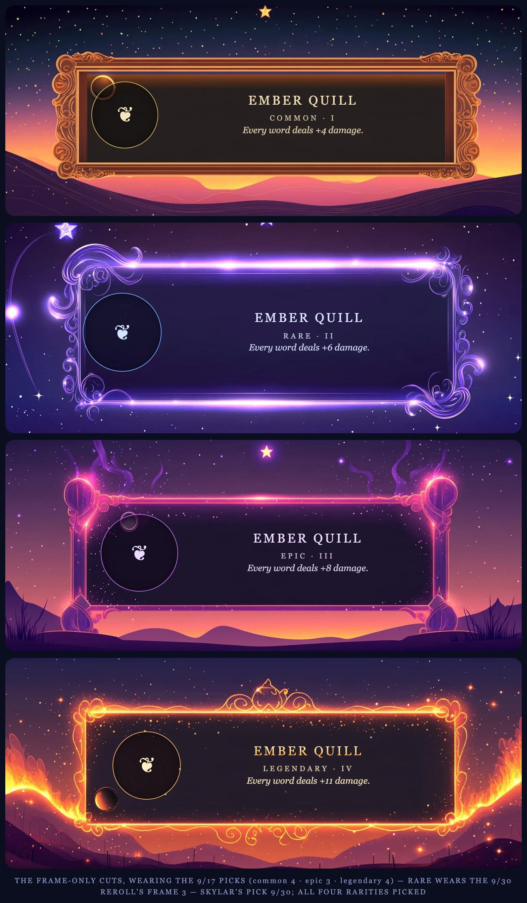

Skylar's two picks from the ornate rework, cut at the one-box law
(49:20, frame at ~85% of the box width) and swapped across the device gallery.
Every shot is labeled with the candidate it wears:
① The Jewel fine scrollwork, crystal finials top and
bottom, a jeweled medallion baked at the lower left — from roll 6da4debb. ② The Swirl flowing flourish corners and bright glow rails —
from roll 69ed39bf.
Neither is applied anywhere yet — the live
open-sky-sigils page still wears
the 9/30 frame-3 pick. This page exists to rule between ① and ②.
I · Head to Head — iPhone 16
The same pick sheet, same device, only the rare swapped.
① The JeweliPhone 16 · 393 × 852

② The SwirliPhone 16 · 393 × 852

II · The Pick Sheet, Swapped
Smallest and largest phone at true relative scale, then the tablets' fixed mock.
② The SwirliPhone SE · 375 × 667

① The JeweliPhone 16 Pro Max · 440 × 956

② The SwirlAny iPad · mock fixed at 350 px
III · The Four-Rarity Ladder, Swapped
Ember Quill I → IV at each device's column width, true relative scale;
the 780 px cap is shown in both candidates.
① The JeweliPhone SE · column 339 px

② The SwirliPhone 16 · column 357 px

① The JeweliPhone 16 Pro Max · column 404 px

② The SwirliPad mini · column 708 px

① The JeweliPad Air 11″ · Pro 13″ · landscape · column capped at 780 px

② The SwirliPad Air 11″ · Pro 13″ · landscape · column capped at 780 px

IV · The Read
Both cut at the family shape natively — no scene squash needed this round; the ornate
rolls came back at ~2.45–2.5:1, so both wear the one-box law untouched.
① The Jewel carries a baked medallion at the lower left that echoes the live roundel,
and crystal finials that read like the epic's corner orbs. Quietest glow of the two.
② The Swirl matches the legendary's flourish energy; its glow rails run brighter, so
the row reads more luminous in the stack — closest kin to the legendary's temperature.
Text holds on the smallest phone in both — panels were re-measured per candidate
(Jewel 16/26/68/44, Swirl 14/28/72/48), buffer intact at SE width.